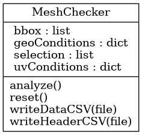

tlc.modeling.meshcheck.MeshChecker
{kind=link}
- class tlc.modeling.meshcheck.MeshChecker
Bases:
objectClass MeshChecker
Statistics of a mesh
- __init__()
Constructor
Methods
__init__()Constructor
analyze()Analyze the selected objects
reset()Initialize object with default values (reset counters)
writeDataCSV(file)Write the CSV data for meshcheck data
writeHeaderCSV(file)Write the CSV header for meshcheck data
Attributes
Original selection to be analized
Global world-space bounding box for the selection [xmin, ymin, zmin, xmax, ymax, zmax]
Dictionary/map of geometry condition checkers (using name as key)
Dictionary/map of UV condition checkers (using name as key)
- analyze()
Analyze the selected objects
- bbox
Global world-space bounding box for the selection [xmin, ymin, zmin, xmax, ymax, zmax]
- geoConditions
Dictionary/map of geometry condition checkers (using name as key)
- reset()
Initialize object with default values (reset counters)
- selection
Original selection to be analized
- uvConditions
Dictionary/map of UV condition checkers (using name as key)
- writeDataCSV(file)
Write the CSV data for meshcheck data
NOTE: This function does not write end-of-line because some data may be concatenated later. End-of-line is responsibility of the caller
- Parameters:
file (_type_) – _description_
- writeHeaderCSV(file)
Write the CSV header for meshcheck data
NOTE: This function does not write end-of-line because some data may be concatenated later. End-of-line is responsibility of the caller
- Parameters:
file (file) – CSV file object to write into. The file must have been opened